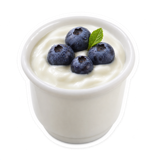
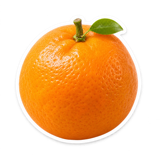
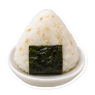
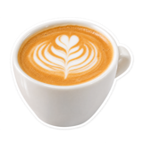

{{title}}
记录经期很多人经期会更想吃东西，记下来能看出规律
经期记录只保存在这台手机上，不会上传。识别饭菜时也不会带上。
{{review.headline}}
{{review.headline2}}
{{review.headline2}}
{{review.sub}}
第{{d.n}}天
身体提醒你的事
对照前一个月{{it.title}}{{it.badge}}
{{it.text}}
和上次比
{{review.previousLabel}}{{c.label}}
{{c.before}}{{c.now}}{{c.unit}}
下个月可以养一养
{{h.label}}{{h.hint}}
记录经期选择开启，可以随时关掉
经期记录只保存在这台手机上，不会上传。识别饭菜时也不会带上。
{{record.big}}{{record.bigLabel}}
{{record.title}}{{record.note}}
{{record.dayLabel}}的量
身体感觉 可多选
经期想多吃，很正常
经期前后身体消耗变大，会更想吃甜的、吃主食。想吃就吃一点，换成更温和的选择，会舒服很多。

酸奶
水果
饭团
热饮这几次经期
经期里加餐{{snackNote}}
{{error}}